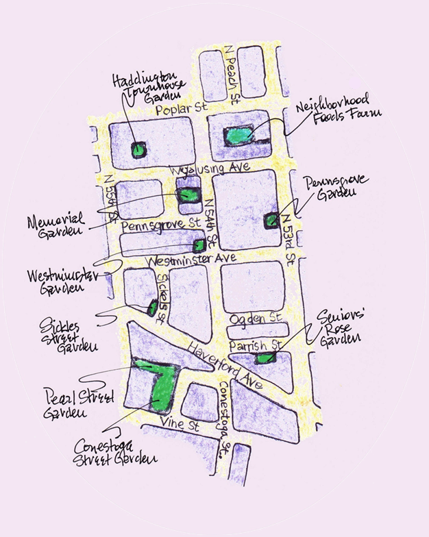

Programs
 UTC partners with Haddington residents to reclaim vacant land for community-building green spaces that bring people together to address community needs.
Our current programs include:

Urban Farming & Gardening
In 2009, UTC and three block captains founded Neighborhood Foods Farm (NF) as a positive solution to food insecurity and the growing number of abandoned lots in the neighborhood. After significant remediation, NF is now a fully functioning ¾ acre farm. We have also developed a community-based micro-farm in collaboration with First African Presbyterian Church, and 27 other vacant lots have been converted into pocket parks, communal growing plots, and educational spaces. Together, these sites comprise a neighborhood food system that annually raises over 8,000 pounds of chemical-free produce. We offer volunteer and apprenticeship opportunities at our farms, and host farm tours through the growing season.
Community-Led Food Distribution
Our produce is distributed through Community-Led Farmers Markets and a Community Supported Agriculture (CSA) program in West Philly where residents have limited options to fresh, quality produce. We engage customers with limited incomes, offering them produce at an affordable price, encouraging the use of subsidized payments like EBT/Access and Senior vouchers. All of our farm stands are uniquely operated by community members (youth and adults), and we provide on-going training and support. Our excess food is donated to local food banks and feeding programs in Haddington.

Community Education & Land Stewardship
Rooted in popular education methodologies, our multigenerational education programs promote health, wellness, and leadership development. For adults and families, we host hands-on workshops that cover topics such as healthy cooking, seed starting, and medicinal tinctures, and provide access to garden beds, and technical assistance and resources to local community gardeners. UTC has two multigenerational teaching gardens where we offer environmental education and gardening instruction.
UTC’s Youth Apprenticeship Program hires and mentors 10-12 high-school aged youth that primarily live in the Haddington. This unique five-month paid apprenticeship introduces Black and youth of color to urban agriculture and cultivates their leadership. Each Apprentice receives 1:1 mentorship from Staff in urban farming, community food distribution, and community education and outreach.
Urban Tree Connection has also incubated Neighborhood Foods Coop, a community-led initiative of local residents who helped found Neighborhood Foods Farm and other community gardens. The group meets monthly to share resources, host community events, and run the Neighborhood Foods farm stand.